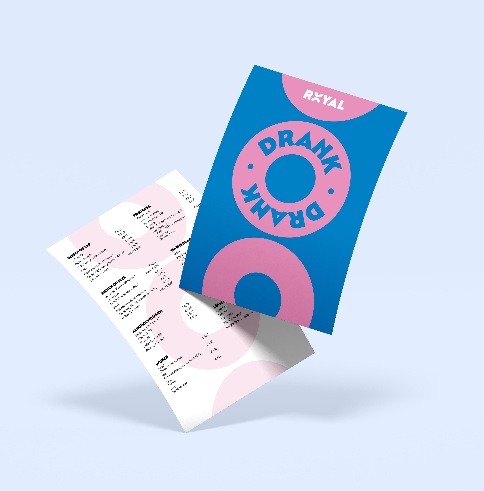
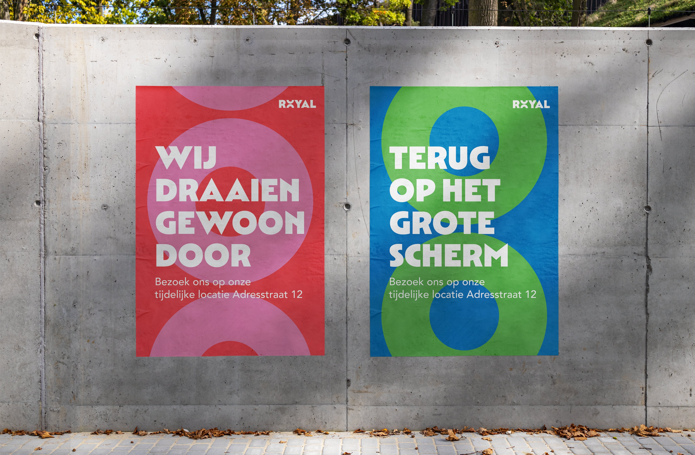
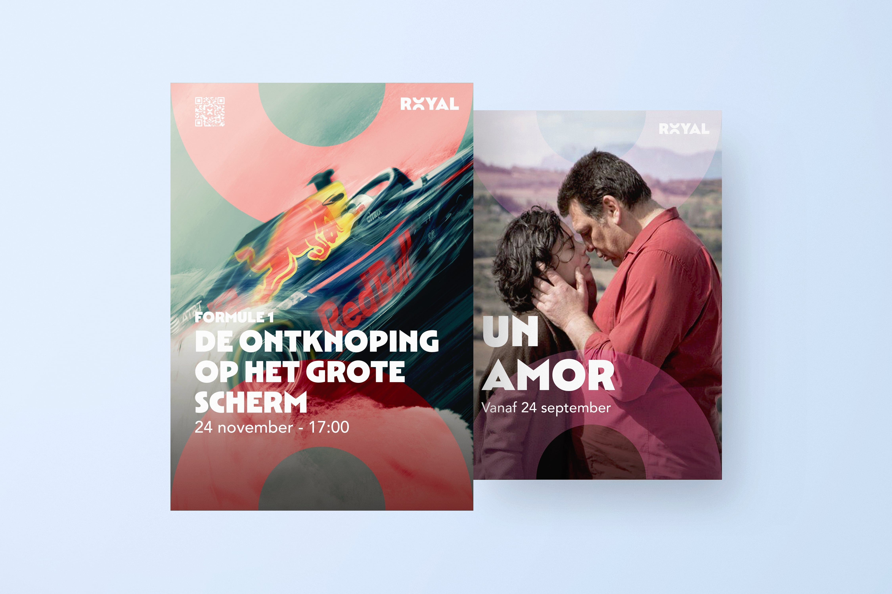

In my fourth year of Communication & Multimedia Design (CMD), I did a project for Royal, an arthouse cinema in Heerlen. They are undergoing a large renovation and wanted to reimagine their branding. Together with fellow student Patrick Dammer, we created the concept 'Royal in Motion'.
Concept
After researching the case, having interviewed the stakeholders, we
created a concept that revolves around motion. The motion of a film
camera, the motion of innovation, and the motion of visitors coming
together in the new Royal. The logo we created captures the 'o' in
'Royal' mid-motion, as seen in the animation above. This symbol can be
found in most of the designs, either as a static shape or as a moving
element.
For the wordmark, we chose a bold font with elements reminiscent
of Art Deco, which is a style often associated with the mining history
of Heerlen. The font gives a modern feel while still embracing the
rich history of the cinema and the city.
Colour and movement
The concept of motion influenced every aspect of the design, from
the logo and prominent shape language to the vast amounts of motion
graphics. The movement in the designs makes them more dynamic and
eye-catching, while also reinforcing the concept. It allows for more
creativity and flexibility in the designs, as the moving elements
can be adapted to different contexts and applications.
The colour palette we chose is based on the primary and
secondary colours of light, the colours used in film. The palette is
vibrant and energetic, with a mix of bold and bright tones. The
colours give a modern and lively feel to the designs. The palette
was carefully balanced to ensure that the colours work well together
and create sufficient contrast between background and foreground
elements. To ensure consistency and legibility, we created a set of
rules for which colours could be used together, and which to avoid.
End products
After establishing the concept and designing the visual identity, we created a range of prototype products for Royal, including physical and digital assets. I was responsible for the motion design of the digital products, whichs include social media posts, website animations, and animations for the big screen. Some of our designs can be seen below.


